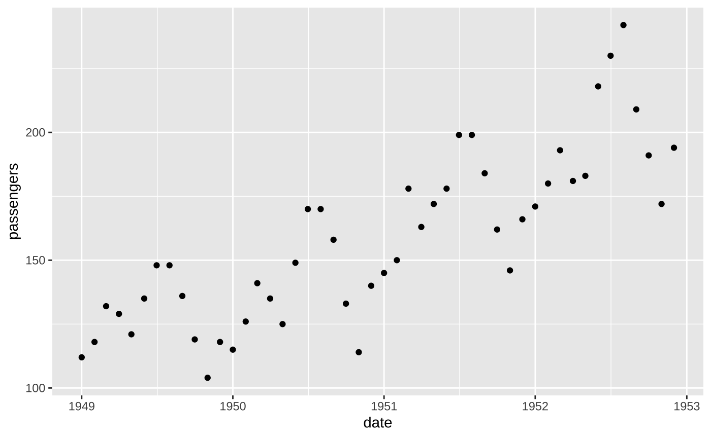

scale_x_yearmonth.RdMakes y-axis have year as a bottom facet, with abbreviated months as minor axis-labels.
scale_x_yearmonth( abbrev = 1, breaks.mnth = 1, mnth.size = 12, yr.var = "Year", yr.size = 16 )
| abbrev | How long to make months? Default=1 means just first letter of month; NA is full month name. |
|---|---|
| breaks.mnth | Frequency of month labels; default= 1 (every month) |
| mnth.size | Font size of month labels; default=12 (pts) |
| yr.var | Variable name for year; default= "Year" |
| yr.size | Font size of year labels; default=16 (pts) |
Code inspired by This post by Jason Fabris
require(ggplot2) #Set up time series dataset df<-data.frame(date=as.Date(c(sapply(1949:1952,function(yr) {paste(yr,1:12,1,sep="-")}))), passengers=as.vector(AirPassengers)[1:48]) df$year<-sprintf("%.4s",df$date) (g <- ggplot(df,aes(date,passengers))+geom_point())#Now break show months and year on x-axis #(doesn't work, because it expects a year variable called "Year") if (FALSE) { (g2 <- g+scale_x_yearmonth()) } #Try that again (g2 <- g+scale_x_yearmonth(yr.var="year"))#Now let's use GP styling for legibility from a distance. #(Note themes have to come before the scaling layer). (g3 <- g2+theme_galactic(base.theme="gray")+scale_x_yearmonth(yr.var="year"))#> Error in find.package(package, lib.loc, verbose = verbose): there is no package called ‘galacticPubs’#This is a bit packed; let's only show every 3 months g3+scale_x_yearmonth(abbrev=3,breaks.mnth=3,yr.var="year")#> Error in eval(expr, envir, enclos): object 'g3' not found#Note that if you want to show a trend line, you can't currently do this across years, #because we're really faceting for each year to trick ggplot into making 2 types of axis label g3+scale_x_yearmonth(abbrev=3,breaks.mnth=4,yr.var="year")+geom_smooth()#> Error in eval(expr, envir, enclos): object 'g3' not found